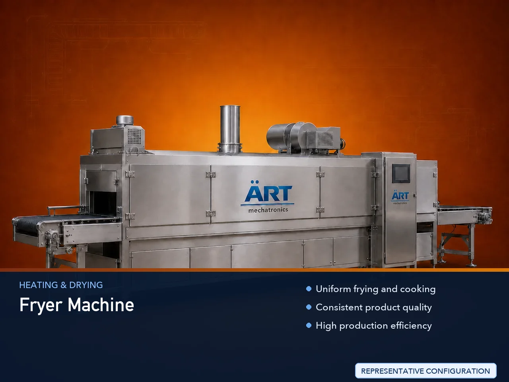

Fryer Machine (Industrial Deep Frying System for Snacks & Food Processing)
A Fryer Machine, also known as an Industrial Deep Fryer or Food Frying System, is an essential processing equipment used for cooking and frying food products in hot oil to achieve desired taste, texture, and crispiness.

About the Fryer Machine
Fryer machines are widely used in industries such as snack processing, namkeen manufacturing, chips production, frozen food processing, and commercial food production, where consistent frying quality and high production capacity are critical.
These systems are designed to ensure uniform heat distribution, controlled oil temperature, and efficient frying, resulting in perfectly cooked products with consistent color and texture.
ART Mechatronics offers advanced fryer machines, engineered for high efficiency, oil optimization, and reliable industrial performance.
One machine, many names
Buyers search for this equipment under many terms — we manufacture all of them:
Working Principle of Fryer Machine
Types of Fryer Machines
Industries Using Fryer Machine
🍟 Snack Industry
- Chips, namkeen
🍗 Frozen Food Industry
- Processed foods
🍩 Food Processing Industry
- Fried products
🏭 Commercial Food Production
- Bulk food manufacturing
🏪 Food Brands & Startups
- Packaged snack production
Features & Advantages
✔ Uniform frying and cooking ✔ Consistent product quality ✔ High production efficiency ✔ Controlled oil temperature ✔ Oil-saving and filtration system ✔ Suitable for various food products ✔ Easy operation and maintenance
Technical Highlights
- Capacity: Batch / Continuous (customizable)
- Heating Type: Electric / Gas / Diesel
- Construction: Stainless Steel (food grade)
- Temperature Control: Adjustable
- Oil Filtration: Integrated system
- Control System: Manual / PLC-based
Turnkey Frying Solutions
ART Mechatronics offers:
- Complete frying system design
- Integration with slicing, seasoning, and packaging
- Oil filtration and circulation systems
- Installation & commissioning
- After-sales service & AMC
Why Choose Art Mechatronics
- Expertise in food processing systems
- Customized solutions for snack industry
- High-performance and hygienic machines
- Energy-efficient designs
- Proven performance across applications
Applications
- Snack Processing Plants
- Chips Manufacturing Units
- Frozen Food Processing Plants
- Food Production Units
- Commercial Kitchens
Related Heating & Drying machines
Get pricing & specs for the Fryer Machine
Share the product, target capacity, current process and plant location. These details help our engineers discuss the right machine or line configuration.
One partner, from design to start-up
ART Mechatronics designs, manufactures, installs and commissions your Fryer Machine solution with regional presence in India, UAE and Thailand.